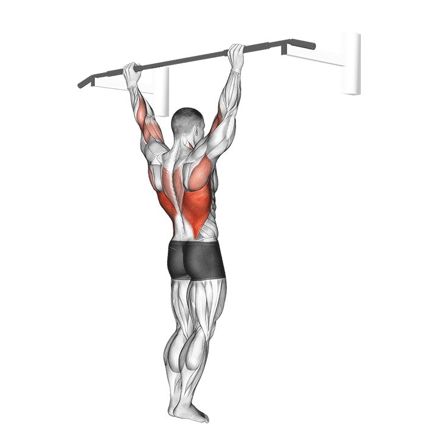

1. Dominadas asistidas
Tirón vertical principal del día, muy bueno para dorsales y fuerza general de espalda.
Técnica clave: hombros abajo, pecho alto y subida controlada sin impulso.
Tip: piensa en llevar los codos hacia el costado, no solo en subir el cuerpo.
Error común: columpiarte o perder tensión escapular al inicio.
Registro
Sin registro guardado todavía.